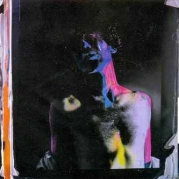

Lista de Canciones
Todas las canciones escritas y compuestas por Charly García, excepto donde se indica.
- «Estaba en llamas cuando me acosté» – 7:04
Una de las canciones más emblemáticas del disco, con una duración extensa y letra enigmática. - «Vemos...» (Instrumental) – 0:35
Breve pieza instrumental que funciona como un puente sonoro. - «Canciones de jirafas» – 2:50
Extraña y simbólica, representa el caos poético del álbum. - «Necesito un gol» – 5:17
Compuesta junto a Andrés Calamaro. Combina fútbol y deseo con sonidos oscuros. - «Alguien en el mundo piensa en mí» – 4:28
Balada introspectiva, melancólica y llena de soledad. - «Constant Concept» (Instrumental) – 4:39
Una pieza instrumental con matices jazz y progresivos. - «Say No More» – 4:38
El manifiesto musical del álbum.No expliques, solo sentí
. - «Cuchillos» – 5:01
Una de las más crudas emocionalmente, con letras profundas y viscerales. - «A1» (Instrumental) – 1:44
Corto interludio instrumental de tonos electrónicos. - «Plan 9» (Instrumental) – 5:03
Inspiración cinematográfica y experimental. - «Casa vacía» – 5:15
Triste y potente. Una casa como símbolo del abandono interior. - «Podrías entender» – 6:11
Canción extensa con una letra que ruega por comprensión. - «Intuición» – 1:42
Compuesta junto a Ken Lawton. Breve y misteriosa. - «La vanguardia es así» – 2:00
Una ironía sobre el arte moderno.La vanguardia es así y punto
.
“Say No More” no es solo un disco: es una declaración de libertad creativa. Charly García.
